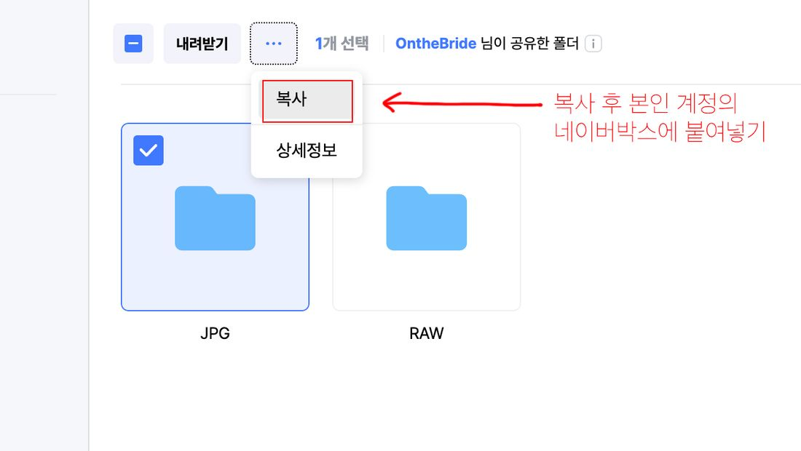
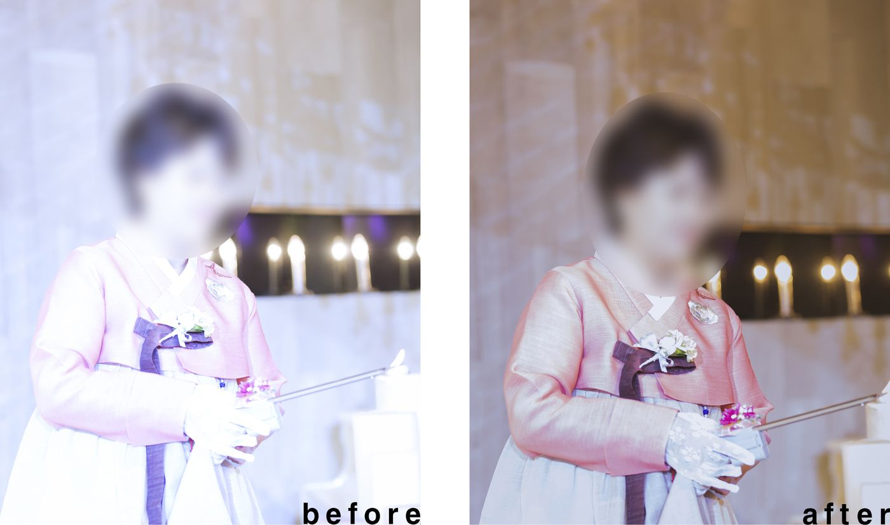
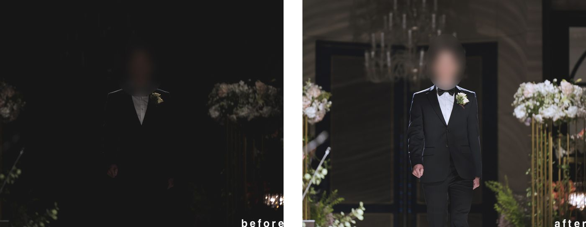

ONTHEBRIDE GUIDE
파일 다운로드 & 셀렉 안내
2025년 12월 예약자부터 적용 · 글이 길어 핵심부터 정리했어요.
자세한 내용은 꼭 아래까지 읽어주세요 🙏
📌 한눈에 보기
- 파일은 JPG로 받으시면 됩니다. (RAW 필요 시 별도 요청)
- 디테일 보정이 들어갈 40장을 셀렉해 주세요. (앨범 있으신 분은 보정파일이 앨범에 들어갑니다)
- 셀렉 기한은 예식일로부터 1년. (1년 이후 작업 시 20만원 추가, 수정 없이 바로 앨범 제작)
- 셀렉 완료 후 40장을 압축해 메일 회신 — 파일명은 예식날짜 + 신부님 성함.
- 회신 메일: onthebride@naver.com
- 원본 파일명은 절대 변경 금지! (변경 시 접수 반려)
- 작업기간: 셀렉 회신일로부터 약 130일 (색감·피부·윤곽 등)
- 후반작업 여부와 상관없이 데이터가 14개월이 지나면 일괄 삭제됩니다. (따로 연락드리지 않아요)
- 추가비용 계좌: 카카오뱅크 3333-01-3327565 김병훈
1파일 다운로드 방법
- 네이버 박스(클라우드)로 다운로드합니다. 보내드린 링크에 접속해 JPG 폴더를 다운로드하세요.
- 네이버 로그인 후 본인 네이버박스에 먼저 복사한 뒤 다운로드하시길 추천드려요. 본인 계정으로 파일이 완전히 넘어가 다운로드가 쉽고 기간에 구애받지 않습니다.
- RAW 파일은 JPG와 같은 사진 파일입니다. 다룰 수 없는 분은 안 받으셔도 됩니다. 필요한데 폴더가 안 보이면 따로 요청하세요.
- 한 페이지씩 수동으로 받아도 정상적인 인터넷 환경이면 1~2일 안에 모두 받을 수 있습니다.

⚠️ 아이패드·아이폰·카카오톡 등으로 받으면 파일 이름이 바뀔 수 있습니다. 꼭 노트북이나 컴퓨터로 다운로드해 주세요.
2공유 기한 · 데이터 책임
- 파일을 넘겨드린 시점부터는 당사의 데이터 보관 및 책임 의무가 없음을 미리 알려드립니다.
- 받으신 파일은 컴퓨터·USB·웹하드·클라우드 등 2중 백업을 추천드립니다. (클라우드 권장)
- 공유 클라우드에서 삭제되더라도 데이터는 따로 보관하지만, 저장 장치의 안전을 100% 보장할 수는 없습니다.
- 공유 후 다시 요청하시더라도 데이터가 없을 수 있으며, 이에 대해 보상하지 않습니다.
- 모든 데이터는 예식 14개월이 지나면 삭제됩니다. (후반작업 여부와 무관하게 일괄 삭제하며 따로 연락드리지 않습니다)
3다운로드가 어려울 때 (USB)
- 대부분 잘 받으시지만, 개인 인터넷 환경에 따라 다운로드가 어려울 수 있습니다. 이런 경우 USB 메모리에 담아 보내드립니다.
- USB 메모리 + 포장 + 배송비 총 10만원의 비용이 발생합니다.
- 입금 후 문자로 요청해 주시면 데이터를 담아 택배로 발송해 드립니다.
입금계좌: 카카오뱅크 / 3333-01-3327565 / 김병훈
4셀렉 방법 (40장)
- 40장을 셀렉하시고, 파일을 압축해 하나의 압축 파일로 메일에 첨부해 보내주세요.
- 가능하신 분은 본인 클라우드에 파일을 넣고 폴더 링크를 기간 무제한으로 공유해 주시면 더 좋습니다! (추천)
5셀렉 기한
- 셀렉 기한은 예식일로부터 1년입니다.
- 1년 이후 작업 요청 시 작업 및 데이터 보관 비용 20만원을 받습니다.
6이벤트 · 앨범 · 페이지 추가
- 화보집 페이지 추가는 1권 1페이지당 5천원입니다. 보정이 들어갈 경우 보정비용이 장당 5천원 추가됩니다. (보정과 페이지 추가는 별도 계산)
- 앨범별로 다르게 구성할 수 있어요. (양가 부모님 다르게 추가 구성 가능) 페이지 추가할 파일은 따로 묶어서 보내주세요.
예시) 2장의 사진을 3개의 앨범에 넣을 경우 → 보정비용 1만원(2장×5천) + 페이지 추가 3만원(권당 1만원×3권) = 총 4만원
7파일명 · 폴더명 (중요!)
JPG 사진의 파일명은 절대 바꾸시면 안 됩니다. 원본 파일명이 있어야 편집용 RAW 파일을 서버에서 골라 작업할 수 있어요. 바꾸시면 보정 접수가 반려되며 재요청 드립니다.
- 회신 시 폴더명/압축파일명은 예식날짜 + 신부님 성함으로 해주세요. (파일 이름이 겹치면 데이터가 바뀔 수 있습니다)
- 셀렉하신 사진은 꼭 본인 클라우드에 따로 보관해 주세요. 간혹 셀렉 메일이 누락되어 다시 요청드릴 수 있습니다. (폴더 공유 링크로 주시면 가장 안전!)
- 사진은 앞뒤가 섞여 있을 수 있지만, 앨범에는 예식 시간 순서로 배치합니다.
8최종 셀렉 · 수정 안내
- 최종 셀렉본은 신중하게 결정해 주세요. 보정파일을 받은 뒤 다른 사진으로 교체하시면 추가 보정비용이 발생합니다. (1장당 5,000원)
- 보정 수정은 횟수 제한 없이 가능합니다. 다만 수정 스케줄을 따로 잡기 때문에 1~2주 정도 소요됨은 양해 부탁드립니다.
9빠른 작업 (추가비용)
- 앨범이나 보정파일을 빨리 받고 싶으시면 10만원으로 최우선 작업이 가능합니다.
- 대략 일주일 내로 보정파일을, 15~20일 내에 앨범까지 수령 가능합니다. (현재 보통 작업기간은 130일)
- 추가비용이 발생하면 선입금 후 톡이나 메일로 꼭 알려주세요!
추가비용 입금계좌: 카카오뱅크 / 3333-01-3327565 / 김병훈
10앨범 제작 전 확인
- 보정작업이 끝나면 앨범 제작 전 사진을 먼저 확인하실 수 있습니다.
- 파일을 메일로 보내드리고 연락드립니다. 확인 후 앨범 진행을 확정해 주셔야 진행됩니다. 답변이 없으면 앨범 제작이 진행되지 않으며 무기한 연기됩니다.
11원본 사진에 대한 이해
원본은 ‘결과물’이 아닙니다.
- 원본에는 테스트 컷, 움직이다 셔터가 눌린 컷, 노출 확인용 컷, 좋은 표정을 잡기 위한 연사 컷 등 다양한 컷이 포함될 수 있어요. 이를 정리하지 않을 뿐 정상적인 촬영 방식입니다. 불필요한 컷은 삭제하시면 됩니다.
- 예식장과 현장 상황에 따라 원본이 열악할 수 있습니다. 원판 외 대부분의 스냅은 현장 분위기를 살리기 위해 별도 조명을 쓰지 않아, 예식장 조명의 영향이 큽니다. 노출이 빗나간 사진도 작업 시 대부분 수정이 가능합니다.


* after는 최종본이 아닌 노출만 조정한 예시입니다.
- 사진이 시간대별로 정렬되어 있지 않을 수 있어요. 앨범에는 시간 순서대로 재배치해 편집합니다. (원판 선촬영 컷은 뒤쪽 원판 단체사진과 함께 배치될 수 있어요)
- 틀어진 사진도 고르셔도 됩니다 — 후반작업으로 수평을 바로잡습니다. 본식 스냅은 인물에 집중하다 보면 수평이 틀어질 수 있는데, 일단 좋은 순간을 담는 것이 가장 중요합니다.
12보정의 범위
수평·수직, 노출·색감, 피부, 윤곽, 불필요한 부분 크롭 작업은 기본적으로 모두 진행합니다.
🎨 색감
- 본식 스냅은 대부분 오토 화이트밸런스로 촬영되어, 원본은 카메라가 자동으로 만든 색입니다. 보정 시 색감은 반드시 달라집니다. (밝기·대비만 조정해도 색감은 바뀝니다)
- 원본 색감을 그대로 원하시면 파일을 다른 폴더로 구분해 알려주세요.
- 원하시는 톤은 사전에 말씀해 주셔야 재수정을 줄일 수 있어요. (다만 ‘화이트톤·피치톤’ 같은 막연한 표현은 사람·화면마다 기준이 달라 정확히 맞추기 어렵습니다)
🧴 스킨(피부)
- 잡티·점·주름을 정리하고 톤 차이를 줄이며 그림자를 완화합니다. (약하게 진행하지만 개인에 따라 과하게 느껴질 수 있어요)
- 원치 않으시면 피부작업 배제를 사전에 요청해 주세요. 피부작업은 장당 비용이 발생하며, 작업이 들어간 후에는 재수정이 어렵습니다.
💁 윤곽
- 성형 수준의 보정(얼굴·몸매 라인)은 하지 않습니다. 본식 스냅은 배경이 복잡해 스튜디오처럼 자유로운 보정이 어렵습니다.
- 얼굴은 대칭을 맞추는 정도, 입꼬리 정도만 작업하며 눈·코·턱·광대는 거의 건드리지 않습니다. (보수적으로 진행)
- 윤곽 보정은 신랑·신부만 진행합니다. (친구분들은 보정하지 않습니다)
- 사진 중간에 끼어든 하객·스탭 등 피사체를 지우는 작업은 어려울 수 있습니다.
13작업 기간 · 납품
- 편집 마무리 시점은 셀렉 회신 메일을 주신 날로부터 약 130일입니다. (날짜는 계속 변동될 수 있어요) 작업은 메일 접수 순서대로 진행합니다.
- 온더브라이드의 모든 편집·상담·메일 답변·스케줄·데이터 관리는 대표가 직접 진행합니다. 사진별 작업 시간과 촬영·연휴 등의 영향으로 시작 시점을 정확히 확정드리기 어려운 점 양해 부탁드립니다.
- 작업이 끝나면 앨범 제본 및 배송은 주말·공휴일 제외 약 15일 소요됩니다. 완료 시 안내 문자를 보내드립니다.
궁금한 점이나 진행 상황이 알고 싶으시면 언제든 연락 주세요. 감사합니다! 🤍
온더브라이드
onthebride@naver.com · 010-3860-6264
www.onthebride.com